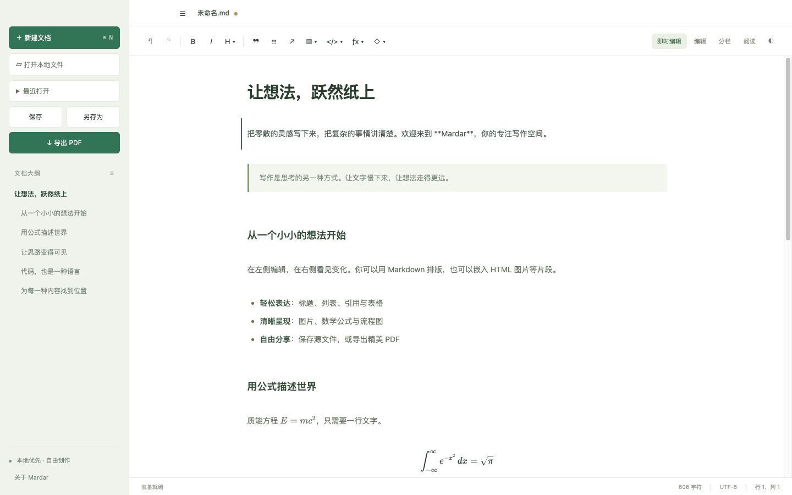
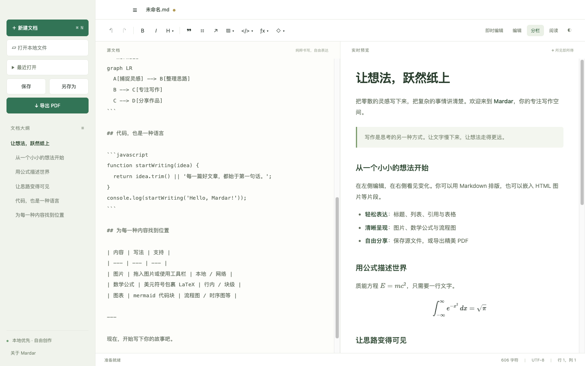
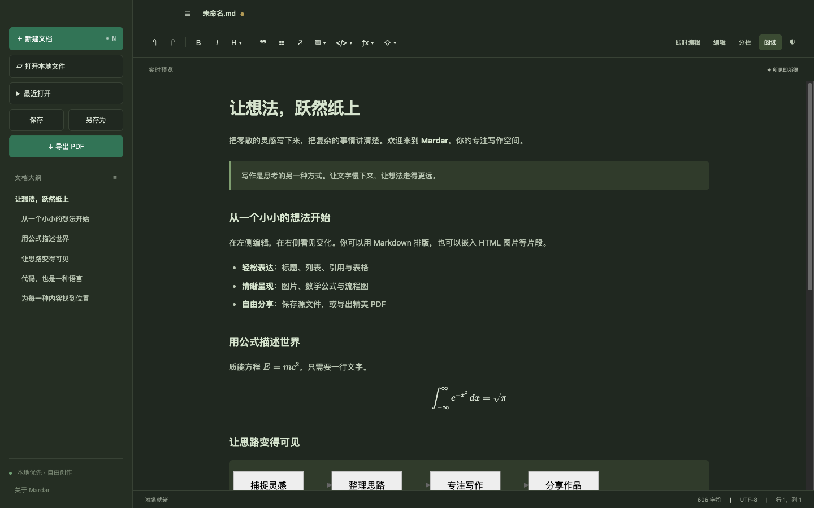
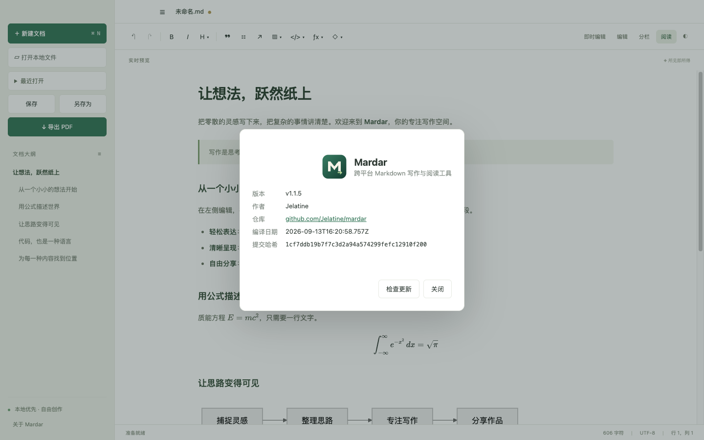

Mardar 是一款本地优先的跨平台 Markdown 写作与阅读工具。点击即写、所见即所得，公式、图表与代码开箱即用，一键导出精美 PDF。

不需要账号，不上传文档。文件就在你的磁盘上，Markdown 源码保持原样。
简洁的界面，把注意力留给文字。



免费开源，基于 MIT 协议发布。
安装包暂未签名。macOS 若提示“已损坏”，执行 xattr -cr /Applications/Mardar.app；Windows SmartScreen 选择“仍要运行”。所有文件的校验值见发布页 SHA256SUMS.txt。
xattr -cr /Applications/Mardar.app
SHA256SUMS.txt